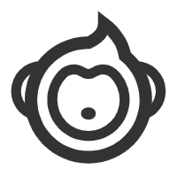

希望能成为有梦想 有温度的程序员
你好 我是张晓雨

👇Look this Stories👇
当年我报志愿的时候，班里一女生告诉我她要报东南大学，还问我要报哪里。
我其实很喜欢她，想给她一个惊喜，就说我报的是西北大学，然后偷偷把志愿改成了和她一样的。
结果报完志愿后，她告诉我其实她也一直暗恋我，把志愿改成了西北大学，说希望我俩的爱情能在那里开花结果。
真是造化弄人！
但有时命运就像网页的弹窗广告一样，不管你点哪个x，总能成功点到广告。 所以即便我和她志愿不同，但还是成功地走到了一起。
因为那年我俩双双落榜，去了同一个地方复读。
我当年高考完了后，总觉得自己考砸了，每天胡思乱想，我妈看不下去给我找了份当导购的工作。
东北的朋友可能知道，几乎每个地区都有一家名叫“火狐狸”的服装商场，门口往往驻扎着很多摆摊的大妈，夏天卖冰糕凉皮棉花糖，冬天卖冻梨玉米热栗子，我就在摊位之间举着个破喇叭喊： 鸟欢迎光淋火狐狸，换季迪奥绒九折，背心59元三件啊，三件！ 早七晚八，没有午休，除了费嗓子，一切挺好。没想到的是隔壁班尼路，雇了一批导购，人手一个大喇叭， 喊之前还拍手：啪啪啪，班尼路！口号简短有力，人又多，直接把我的声音盖过去了，本来也没啥，可恰逢第二天查高考成绩，我总觉得这不是个好兆头。 于是我中午偷偷去百货买了一个大功率的喇叭，比我脑袋还大，一般都用来挂村里电线杆子上的，我当时什么也不想，就想一定得争这口气。
下午我提着喇叭来到火狐狸门口，几个摆摊的大妈忘了吆喝，吃惊地望着我， 而我站定位置，望向对面班尼路啪啪啪的几个人。那一瞬间，我仿佛置身长坂坡，面对曹军五千虎豹骑，横眉立目，把心中所有忧虑不安都化为愤怒， 举起喇叭，用尽全力吼了出来：鸟欢迎光淋火狐狸，换季迪奥绒九折，背心59元三件啊，三件！！！
那个“件”字回荡了足足三秒才散去，别说班尼路那几个人了，整条大街都安静了下来，人们也静止了，就连街边翻垃圾的狗都僵住了，只听得到摆摊大妈手里的雪糕滴到地上的声音：哒...哒...哒...
第二天我的成绩出来了，考得不错，之后我就不去干了，主要是想去也不让了。 那天喊完后，一下午没人敢从门前过，经理直接把我给开除了，走之前他特别叮嘱我，以后我去买衣服也不行。
但我没有忘了那段经历，直到今天，我偶尔还会在睡梦中惊醒，坐在床上大喊一句：鸟欢迎光淋火狐狸！